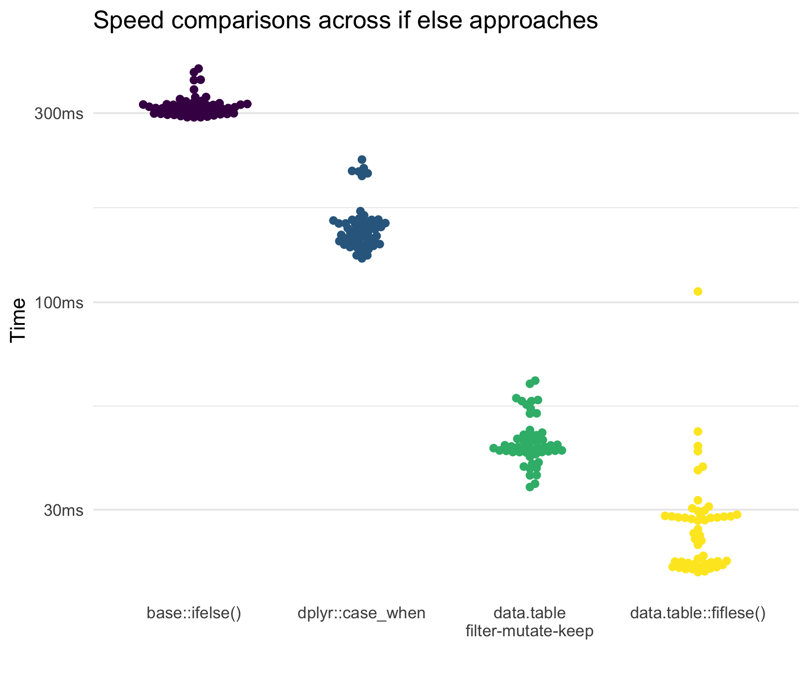

Fast and Readable ‘If Else’ in R
As I’ve spent time learning about different approaches to working with data, I’ve seen several subtle, but important, differences in how to do things. This very short post is presenting how one can perform vectorized “if else” functions in R. The idea of “if else” basically is:
If something meets a condition, do this; else, do that.
Why do this? Well, we are often making or adjusting a variable based on values in another variable. This is often done using base::ifelse(), dplyr::if_else(), dplyr::case_when(), or data.table::fiflese(). But it turns out there is another way to do this in data.table that is very quick.
For this post, we will use:
# Core
library(dplyr)
library(data.table)
library(bench)
# Helpers
library(tidyr)
library(ggbeeswarm)We’ll also create a ficticious data set with four variables: grp, x, y, and z.
dt <- data.table(
grp = factor(sample(1L:3L, 1e6, replace = TRUE)),
x = rnorm(1e6),
y = rnorm(1e6),
z = sample(c(1:10, NA), 1e6, replace = TRUE)
)
dt## grp x y z
## 1: 2 1.54354692 0.2488806 3
## 2: 1 -0.12137236 1.1422738 7
## 3: 3 1.36208427 0.2579651 6
## 4: 3 1.38589484 -0.2010243 5
## 5: 1 0.22159682 0.3800929 3
## ---
## 999996: 2 -2.99771011 -1.3656569 7
## 999997: 2 0.77903607 -1.3611519 9
## 999998: 1 0.46609657 -0.8462516 1
## 999999: 2 0.33895222 2.1690368 7
## 1000000: 3 -0.03630487 0.6660393 3If Else
Let’s say we want to create a new variable that is categorizing our x variable. Below we walk through each approach to doing this.
base::ifelse(), dplyr::if_else(), and data.table::fiflese()
Both base::ifelse(), dplyr::if_else(), and data.table::fiflese() work the same way, but if_else() and fifelse() are more careful about variable types and fiflese() is super fast. These are used with the following general syntax:
if_else(condition, true, false)where:
conditionis something that can be true or false. For example, we could dox > median(x)to test if each individual point ofxis greater than the median ofxor not.trueis what is supposed to happen when the condition is true.falseis what is supposed to happen when the condition is false.
So with our example data, we can do:
dt %>%
mutate(x_cat = if_else(x > median(x), "high", "low"))## # A tibble: 1,000,000 x 5
## grp x y z x_cat
## <fct> <dbl> <dbl> <int> <chr>
## 1 2 1.54 0.249 3 high
## 2 1 -0.121 1.14 7 low
## 3 3 1.36 0.258 6 high
## 4 3 1.39 -0.201 5 high
## 5 1 0.222 0.380 3 high
## 6 1 0.518 -0.875 7 high
## 7 3 0.0319 1.14 NA high
## 8 2 -0.843 -0.997 6 low
## 9 3 1.51 -1.05 1 high
## 10 2 0.110 -0.351 2 high
## # … with 999,990 more rowsWe could do this with data.table like below:
dt[, x_cat := fiflese(x > median(x), "high", "low")]dplyr::case_when()
A newer, but fantastic, approach is using dplyr::case_when(). This uses a unique syntax, but one that can avoid some issues. When there’s more than 2 levels of the new variable (e.g., not just a “high” and “low” but there is also a “moderate” level) then we use what is called nested ifelse statements. These can get messy, with many parenthases. For example, with just two three levels, we now need to use two if_else() statements, where the second is in the false place of the first.
dt %>%
mutate(x_cat = if_else(x < -.5, "low",
if_else(x < .5 , "moderate", "high"))) %>%
as_tibble()## # A tibble: 1,000,000 x 5
## grp x y z x_cat
## <fct> <dbl> <dbl> <int> <chr>
## 1 2 1.54 0.249 3 high
## 2 1 -0.121 1.14 7 moderate
## 3 3 1.36 0.258 6 high
## 4 3 1.39 -0.201 5 high
## 5 1 0.222 0.380 3 moderate
## 6 1 0.518 -0.875 7 high
## 7 3 0.0319 1.14 NA moderate
## 8 2 -0.843 -0.997 6 low
## 9 3 1.51 -1.05 1 high
## 10 2 0.110 -0.351 2 moderate
## # … with 999,990 more rowsThis is where case_when() is really awesome. Consider the same thing we just did with if_else() but with case_when().
dt %>%
mutate(x_cat = case_when(x < -.5 ~ "low",
x < .5 ~ "moderate",
x >= .5 ~ "high"))## # A tibble: 1,000,000 x 5
## grp x y z x_cat
## <fct> <dbl> <dbl> <int> <chr>
## 1 2 1.54 0.249 3 high
## 2 1 -0.121 1.14 7 moderate
## 3 3 1.36 0.258 6 high
## 4 3 1.39 -0.201 5 high
## 5 1 0.222 0.380 3 moderate
## 6 1 0.518 -0.875 7 high
## 7 3 0.0319 1.14 NA moderate
## 8 2 -0.843 -0.997 6 low
## 9 3 1.51 -1.05 1 high
## 10 2 0.110 -0.351 2 moderate
## # … with 999,990 more rowsNo nested statements needed. Instead it relies on the following syntax:
case_when(condition1 ~ if_condition1_true,
condition2 ~ if_condition2_true,
condition3 ~ if_condition3_true,
condition4 ~ if_condition4_true)With no real limit to the number of conditions that can be used. Any values that don’t meet the conditions (so if someone in the data don’t meet conditions 1 - 4, their value for this new variable we are making would be NA.
data.tables filter-mutate-keep
This approach is unique to data.table and functions very similarly to case_when() in terms of syntax. For example,
dt[x < -.5, x_cat := "low"]
dt[x >= -.5 & x < .5, x_cat := "moderate"]
dt[x >= .5, x_cat := "high"]This filters by the condition and then assigns values to x_cat either low, moderate, or high. This results in the same thing as the case_when() example. The only added burden of this approach is that it doesn’t move from one condition to the next in the same way case_when(). That is, case_when() will find the rows that fit the first condition, and then will look at the next condition (and ignore the rows that already met the first condition). The filter-mutate-keep approach requires that you are very explicit since it won’t ignore the rows that met the other conditions. Still, in many situations, it doesn’t add too much more coding.
Is one preferred?
First, preference depends on a number of things. This can be syntax, performance, team dynamics, etc. As such, I can’t tell you what is preferred. I have my opinions (I love case_when() and the filter-mutate-keep approaches) but all discussed herein will do the trick.
But to help you understand the performance of the approaches, consider the following results.

This shows that the new data.table::fifelse() is incredibly quick while the filter-mutate-keep approach is also very fast. In most data situations, it is unlikely to matter much. Even with 1,000,000 rows and 5 variables, all only differed by a bit.
Note that code to produce the benchmarking and figure is below.
base_dt <- copy(dt) %>% as.data.frame()
dply_dt <- copy(dt) %>% as_tibble()
dt_filt <- copy(dt)
dt_fife <- copy(dt)
base_if <- quote(
base_dt$x_cat <- ifelse(base_dt$x < -.5, "low",
ifelse(base_dt$x < .5, "moderate", "high")))
casewhen <- quote(
dt <- mutate(dt, x_cat = case_when(x < -.5 ~ "low",
x < .5 ~ "moderate",
x >= .5 ~ "high")))
dt_fmk <- quote({
dt_filt[x < -.5, x_cat := "low"]
dt_filt[x < .5, x_cat := "moderate"]
dt_filt[x >= .5, x_cat := "high"]})
dt_fif <- quote(
dt_fife[, x_cat := fifelse(x < -.5, "low",
fifelse(x < .5, "moderate", "high"))])
bm <-
bench::mark(
eval(base_if),
eval(casewhen),
eval(dt_fmk),
eval(dt_fif),
check = FALSE,
iterations = 50)
bm %>%
pull(time) %>%
setNames(c("base",
"dplyr",
"fmk",
"fif")) %>%
as.data.frame() %>%
gather() %>%
mutate(key = factor(key,
levels = c("base",
"dplyr",
"fmk",
"fif"),
labels = c("base::ifelse()",
"dplyr::case_when",
"data.table\nfilter-mutate-keep",
"data.table::fiflese()"))) %>%
ggplot(aes(key, value, color = key)) +
geom_beeswarm() +
theme_minimal() +
theme(panel.grid.major.x = element_blank(),
legend.position = "none") +
labs(y = "Time",
x = "",
title = "Speed comparisons across if else approaches") +
scale_colour_viridis_d()
ggsave(here::here("assets/RMD/2019-10-16-filter_mutate_keep_files/speed.png"),
width = 6,
height = 5)Session Info
sessioninfo::session_info()## ─ Session info ──────────────────────────────────────────────────────────
## setting value
## version R version 3.6.1 (2019-07-05)
## os macOS Mojave 10.14.6
## system x86_64, darwin15.6.0
## ui X11
## language (EN)
## collate en_US.UTF-8
## ctype en_US.UTF-8
## tz America/Denver
## date 2019-10-17
##
## ─ Packages ──────────────────────────────────────────────────────────────
## package * version date lib source
## assertthat 0.2.1 2019-03-21 [1] CRAN (R 3.6.0)
## backports 1.1.5 2019-10-02 [1] CRAN (R 3.6.0)
## beeswarm 0.2.3 2016-04-25 [1] CRAN (R 3.6.0)
## bench * 1.0.4 2019-09-06 [1] CRAN (R 3.6.0)
## cli 1.1.0 2019-03-19 [1] CRAN (R 3.6.0)
## colorspace 1.4-1 2019-03-18 [1] CRAN (R 3.6.0)
## crayon 1.3.4 2017-09-16 [1] CRAN (R 3.6.0)
## data.table * 1.12.4 2019-10-03 [1] CRAN (R 3.6.1)
## digest 0.6.21 2019-09-20 [1] CRAN (R 3.6.0)
## dplyr * 0.8.3 2019-07-04 [1] CRAN (R 3.6.0)
## ellipsis 0.3.0 2019-09-20 [1] CRAN (R 3.6.0)
## evaluate 0.14 2019-05-28 [1] CRAN (R 3.6.0)
## fansi 0.4.0 2018-10-05 [1] CRAN (R 3.6.0)
## ggbeeswarm * 0.6.0 2017-08-07 [1] CRAN (R 3.6.0)
## ggplot2 * 3.2.1 2019-08-10 [1] CRAN (R 3.6.0)
## glue 1.3.1 2019-03-12 [1] CRAN (R 3.6.0)
## gtable 0.3.0 2019-03-25 [1] CRAN (R 3.6.0)
## here 0.1 2017-05-28 [1] CRAN (R 3.6.0)
## htmltools 0.4.0 2019-10-04 [1] CRAN (R 3.6.0)
## knitr 1.25 2019-09-18 [1] CRAN (R 3.6.0)
## lazyeval 0.2.2 2019-03-15 [1] CRAN (R 3.6.0)
## lifecycle 0.1.0 2019-08-01 [1] CRAN (R 3.6.0)
## magrittr 1.5 2014-11-22 [1] CRAN (R 3.6.0)
## munsell 0.5.0 2018-06-12 [1] CRAN (R 3.6.0)
## pillar 1.4.2 2019-06-29 [1] CRAN (R 3.6.0)
## pkgconfig 2.0.3 2019-09-22 [1] CRAN (R 3.6.0)
## profmem 0.5.0 2018-01-30 [1] CRAN (R 3.6.0)
## purrr 0.3.2 2019-03-15 [1] CRAN (R 3.6.0)
## R6 2.4.0 2019-02-14 [1] CRAN (R 3.6.0)
## Rcpp 1.0.2 2019-07-25 [1] CRAN (R 3.6.0)
## rlang 0.4.0 2019-06-25 [1] CRAN (R 3.6.0)
## rmarkdown 1.16 2019-10-01 [1] CRAN (R 3.6.0)
## rprojroot 1.3-2 2018-01-03 [1] CRAN (R 3.6.0)
## scales 1.0.0 2018-08-09 [1] CRAN (R 3.6.0)
## sessioninfo 1.1.1 2018-11-05 [1] CRAN (R 3.6.0)
## stringi 1.4.3 2019-03-12 [1] CRAN (R 3.6.0)
## stringr 1.4.0 2019-02-10 [1] CRAN (R 3.6.0)
## tibble 2.1.3 2019-06-06 [1] CRAN (R 3.6.0)
## tidyr * 1.0.0 2019-09-11 [1] CRAN (R 3.6.0)
## tidyselect 0.2.5 2018-10-11 [1] CRAN (R 3.6.0)
## utf8 1.1.4 2018-05-24 [1] CRAN (R 3.6.0)
## vctrs 0.2.0 2019-07-05 [1] CRAN (R 3.6.0)
## vipor 0.4.5 2017-03-22 [1] CRAN (R 3.6.0)
## viridisLite 0.3.0 2018-02-01 [1] CRAN (R 3.6.0)
## withr 2.1.2 2018-03-15 [1] CRAN (R 3.6.0)
## xfun 0.10 2019-10-01 [1] CRAN (R 3.6.0)
## yaml 2.2.0 2018-07-25 [1] CRAN (R 3.6.0)
## zeallot 0.1.0 2018-01-28 [1] CRAN (R 3.6.0)
##
## [1] /Library/Frameworks/R.framework/Versions/3.6/Resources/library